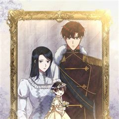
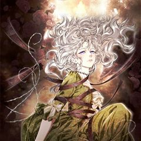
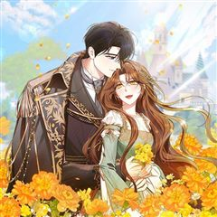

내가 버린 개에게 물렸을 때 같은 웹툰 추천

내가 버린 개에게 물렸을 때 · 김다
내가 버린 개에게 물렸을 때 재밌게 봤다면 이 웹툰들도 좋아할 거예요. 같은 장르이면서 고자극로맨스, 자극적인, 미스터리 같은 요소가 겹치는 작품을, 겹치는 요소가 많은 순서로 20개 골랐어요.
2026-09-30 기준 · 네이버웹툰·카카오웹툰·레진코믹스 · 성인 작품 제외
내 취향으로 직접 골라 추천받기 →-
1
 카카오웹툰
카카오웹툰오만한 후회
첫사랑이자 짝사랑 중인 순애보, 스텔라 엠브로즈. 무려 십여 년간 마음에 품어온 남자가 있다. 어느 날, 그 남자가 십 년 만에 수도로 돌아왔다. 스텔라는 우연히 기도하던 중 공작과 마주치게 되는데. 하지만 그는 경멸스러운 시선을 보내왔고, 상처받은…
고자극로맨스미스터리로판판타지로맨스카카오웹툰에서 보기 → -
2
 네이버웹툰
네이버웹툰남편을 죽이고 저택을 상속받았다
몰락한 가문의 막내 이브니에. 신부로 팔려간 첫날 밤, 자신을 제물로 바치려는 신랑을 죽이고 벨페르 저택의 주인이 된다. 이 기이한 저택에서 살아남으려면 숨겨진 괴담을 찾아 종속시키는 것 뿐. 절망한 이브니에의 꿈에 정체불명의 남자가 나타나 그녀를…
고자극로맨스미스터리로판판타지로맨스네이버웹툰에서 보기 → -
3

카카오웹툰이혼하고 가족을 버렸다
5년간의 계약 결혼이 끝나고 이혼 서류를 작성하는 날, 칼리고는 힐리아를 붙잡고 싶었다. "...우리의 계약은 그렇다고 쳐요. 하지만 어떻게 아이를 보려고도 하지 않는 겁니까." "자신이 낳은 아이니까 무조건 사랑해야 한다고 생각하세요? 저 아이는…
자극적인미스터리로판판타지로맨스카카오웹툰에서 보기 → -
4

카카오웹툰부활한 악녀를 찾지 마세요
“끝으로 남길 말이 있습니까?” “……신이시여, 불쌍히 여기소서.” 나는 믿었던 이들에게 배신당했고, 결국 참수 당해 죽었다. 그런데 신탁과 함께 세상이 뒤집혔다. 《악이 창궐하여 너희에게 부활자를 내리니 강건히 맞서라.》 신이시여. 쟤들을 불쌍히…
자극적인미스터리로판판타지로맨스카카오웹툰에서 보기 → -
5

카카오웹툰나를 경멸하는 당신에게
8년 전 성당 방화 사건의 범인, 재닛 윌튼이 돌아왔다. 각자의 목적을 위해 결혼해야 하는 두 사람. 하지만 리하넬에게 재닛은 자신의 일상을 파괴한 증오의 대상일 뿐이다. "내가 원할 때 언제든 당신의 몸에 상처를 낼 거야. 열 번. 그 조건으로 결…
자극적인미스터리로판판타지로맨스카카오웹툰에서 보기 → -
6
 네이버웹툰
네이버웹툰내 남편의 정부에게
나, 레티시아 비올렛은 남편에게 헌신했지만, 모든 것을 잃었다. 그대로 목숨까지 잃을 뻔하던 찰나, 한 남자가 나타난다. 그 남자는 완벽한 복수를 이루도록 도와준다는데... "제 복수를 이루어 주겠다는 말... 꼭 지켜 주세요." 날 죽음까지 몰아넣…
고자극로맨스자극적인로판판타지로맨스네이버웹툰에서 보기 → -
7
 카카오웹툰
카카오웹툰파옥
한민트 작가의 <파옥> 정식 웹툰화! 용은 잃어버린 생명의 구슬을 갈구하게 되어 있다. 따라서 용의 반려는 선택하는 것이 아니라 결정되어 있는 것이다. *** 제국 유사 이래 가장 짙은 용혈을 타고난 황제, 이스브란트. 피 내음과 비명들 사이에서 세…
고자극로맨스자극적인로판판타지로맨스카카오웹툰에서 보기 → -
8
 네이버웹툰
네이버웹툰시한부 황후의 나쁜 짓
정략결혼이었지만 첫사랑이었다. 황제여서가 아니라 당신이어서 사랑했다. 휠체어를 탄 몸으로 스텔라는 제국과 남편을 위해 헌신했다. 그러나 돌아온 것은 처절한 죽음. 여신은 사지가 마비되어 죽은 스텔라를 회귀시켰다. 이번 생에서도 소꿉친구를 선택하는 남…
고자극로맨스자극적인로판판타지로맨스네이버웹툰에서 보기 → -
9
 카카오웹툰
카카오웹툰남편의 말대로 정부를 들였다
' “기억하지 루이제? 내 사생활에 참견하는 순간 이 결혼은 끝이야. 그걸 받아들인 건 당신이고.” 결혼 기간 약 3년. 끊이지 않고 바람을 피우는 남편에게 지친 어느 날, 남편이 정부를 들이라고 했다. 그의 말대로 정부를 구해보려고 뒷골목에서 가장…
고자극로맨스로판판타지로맨스카카오웹툰에서 보기 → -
10
 카카오웹툰
카카오웹툰알브레히트의 진주
사라진 알브레히트의 진주, 마침내 그 행방이 밝혀지다! “그래서 저와 결혼하려는 거라고요? 차라리 진주를 가져가세요!” 무엇인지도 모른 채 황실 가보를 갖게 된 루이제와 진주의 진짜 주인 카이어스. “이런.” 카이어스의 기다란 손가락이 루이제의 턱…
고자극로맨스로판판타지로맨스카카오웹툰에서 보기 → -
11
 네이버웹툰
네이버웹툰개는 헤엄치는 꿈을 꾼다
"우리 이복 남매인 거 알아요?" 매미 소리가 기승을 부리던 여름, 여은의 일상이 완벽하게 흔들린다. 빚만 떠넘기던 엄마가 두고 간 7살짜리 동생, 그리고 엄마의 교통사고 소식과 함께 찾아온 의문의 남자, 기승도. 무채색의 차가운 기운을 풍기는 그와…
고자극로맨스자극적인로맨스스릴러·공포네이버웹툰에서 보기 → -
12카카오웹툰
붉은 달밤의 끝자락에서
저주받은 아이라 손가락질 받으며 외롭게 살아온 자운. 어느 날, 괴질이 온 마을을 덮치고 사람들이 속수무책으로 쓰러지자 마을 사람들은 신의 분노를 달래겠다며 인신공양을 시작한다. 자운은 가문의 압박 속에서 친척 누이를 대신해 이무기의 제물로 끌려가고…
고자극로맨스미스터리로맨스스릴러·공포카카오웹툰에서 보기 → -
13
 카카오웹툰
카카오웹툰악역의 엔딩은 죽음뿐
역하렘 공략 게임의 악역, 에카르트 공작가의 하나뿐인 공녀이자 입양아 페넬로페로 빙의했다. 그런데 하필 난이도는 극악! 뭘 해도 엔딩은 죽음뿐! ‘진짜 공녀’가 나타나기 전에 여주의 어장 중 한 명을 공략해서 살아남아야 한다. 사사건건 시비를 거는…
자극적인로판판타지로맨스카카오웹툰에서 보기 → · 악역의 엔딩은 죽음뿐 같은 웹툰 → -
14
 카카오웹툰
카카오웹툰남주를 죽여보겠습니다
로판 소설을 읽고 몸이 아파오던 나 권진하. 여주인공 엘비가 느끼는 감정과 감각이 모두 연결되어버렸다. 끔찍한 통증과 슬픔에 병원까지 찾아갔지만 몸에는 이상무. 결국 소설 작가에게 메일을 보냈다. 제발 쓰레기 남주가 여주 좀 그만 괴롭히게. 하지만…
자극적인로판판타지로맨스카카오웹툰에서 보기 → -
15
 카카오웹툰
카카오웹툰점괘보는 공녀님
귀신 보는 능력을 가진 탑배우 이시아. 사고 후 '카밀라 소르펠'의 몸에서 눈을 뜬다. 문제는 말이지. "아, 아버지! 살려 주세요!" 이 여자의 끝이 매번 죽음이라는 것! 목숨줄 늘리는 게 우선이니, 일단 여기 터줏대감 귀신들과 대화부터 좀 해 볼…
미스터리로판판타지로맨스카카오웹툰에서 보기 → · 점괘보는 공녀님 같은 웹툰 → -
16
 카카오웹툰
카카오웹툰악당들에게 키워지는 중입니다
즐겨보던 로판 소설의 엑스트라 소녀로 빙의한 지 1년 만에 내가 곧 쫓겨날 신세라는 걸 알게 됐다. 차라리 내 발로 집을 나가겠다고 했더니, “사실은 이 아이가 내 따님입니다. 그렇지, 따님?” 사이코패스 망나니 공자의 눈에 들어 버렸다? ‘놀이 후…
미스터리로판판타지로맨스카카오웹툰에서 보기 → · 악당들에게 키워지는 중입니다 같은 웹툰 → -
17
 카카오웹툰
카카오웹툰입양딸 역할을 지나치게 잘해버렸다
책 속에 처음 들어왔을 때 나는 그냥 살아남는 것이 목표였다. 최대한 가늘고! 길고! 행복하게! 그래서 아등바등 최선을 다해 살았다. 슬슬 독립해서 꽃길을 걸어보려 했는데. “어딜 가더라도 주인님 옆자리는 내 거예요. 평생 내 머리 쓰다듬어주기로 약…
미스터리로판판타지로맨스카카오웹툰에서 보기 → -
18
 카카오웹툰
카카오웹툰막내 공녀의 총애를 독차지했더니, 모두 내게 집착한다
정보 길드의 일급 요원으로 임무를 수행하던 중 검에 가슴이 꿰뚫렸다. 영락없이 죽었다고 생각했는데……. 8살, 지옥 같던 보육원 시절로 돌아왔다?! “안농, 난 다나야!” 마침, 내 앞에 나타난 엘라드 공작가의 막내 공녀 다이애나. 지난 생의 후회를…
미스터리로판판타지로맨스카카오웹툰에서 보기 → -
19
 카카오웹툰
카카오웹툰망겜 속에 갇혔다
평소와 다를 바 없이 평범한 일상을 보내는 도버 마을 약재상 【샤리 아즈라엘】 그러던 어느 날, 자신이 사실 망겜 속 NPC에 빙의되어 2년 동안 게임에 갇혀 있었다는 사실을 불현듯 깨닫고 만다. 만약 게임에서 나가지 못한다면 "VR 게임을 하던 2…
미스터리로판판타지로맨스카카오웹툰에서 보기 → -
20
 카카오웹툰
카카오웹툰내 남편이 너무 귀여워서 곤란하다
가문의 빚 대신 결혼하게 된 이엘리 블랑쳇. 게다가 남편 될 사람은 무시무시한 소문의 헤센바이츠 소공작이었다! "괴물에게는 치료 따윈 필요 없다." 그런데 막상 가 본 공작 성에서는, 어린 내 남편이 괴물이라며 학대를 당하고 있었다. 어린 남편이 불…
미스터리로판판타지로맨스카카오웹툰에서 보기 →